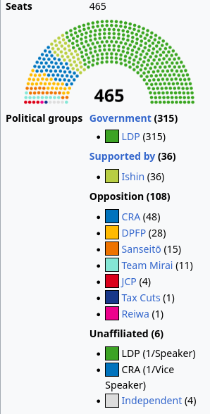
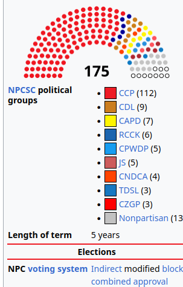

𝐀𝐬𝐡𝐥𝐞𝐲 𝐁𝐥𝐨𝐜𝐤🍥🌹🇹🇼🇪🇺🏳️⚧️
@bolckAshley
@rojoChilean


𝐀𝐬𝐡𝐥𝐞𝐲 𝐁𝐥𝐨𝐜𝐤🍥🌹🇹🇼🇪🇺🏳️⚧️
@bolckAshley
說毛時代有「民主」，還吹噓毛時代是所謂「大民主」的人往往都會有意無意的忽略了一個事情：中國那八大「民主黨派」並非在1976年後才淪為花瓶——他們早在1957年的「反右」中就被剝奪了政治功能了👋 https://t.co/rJYcs6JbsF
Red Chilean 🇨🇱🇷🇺🇵🇸
@rojoChilean
Here is Japan's congress, and then China's. Make your own conclusions https://t.co/wGQJIxaOhs https://t.co/A4VFIwAuYD